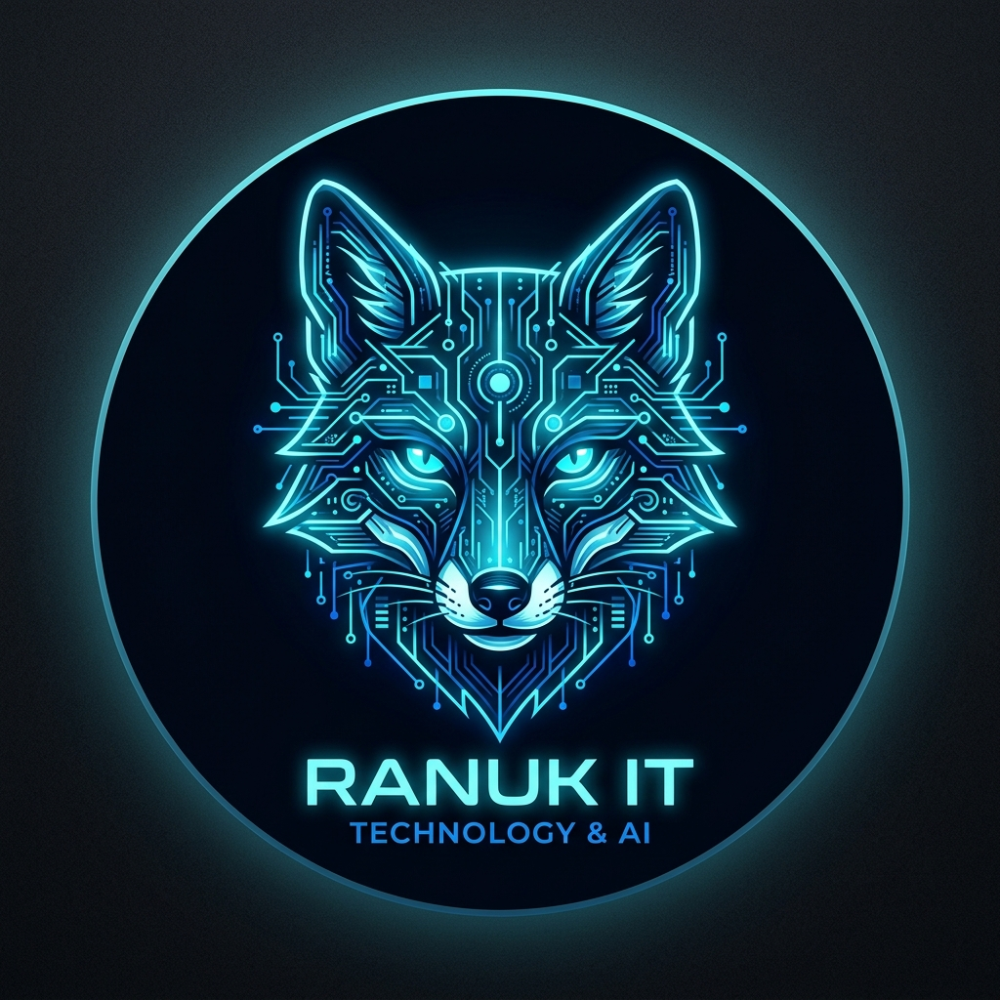
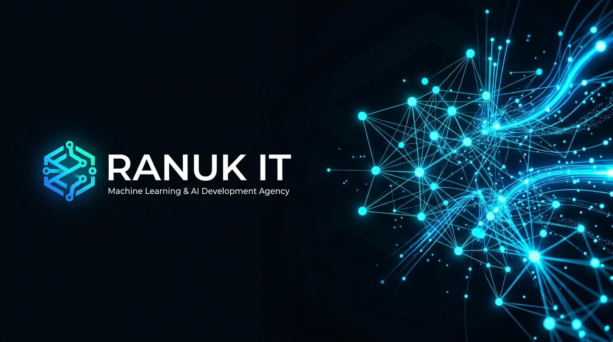

<!DOCTYPE html>
<html lang="es">
<head>
    <script async src="https://www.googletagmanager.com/gtag/js?id=G-QQ12Q4Z375" integrity="sha384-mufsqkbiiYPCgyPW4oxZWM2ZZKL9m8btW+vH4VHVqVEG4dQ0WKFOarkgbSmYPeJX" crossorigin="anonymous"></script>
<script src="../js/ga.js"></script>

    <meta charset="UTF-8">
    <meta name="viewport" content="width=device-width, initial-scale=1.0">
    <title>Ranuk IT Solutions — Desarrollo de Software a Medida | ML y Soluciones IT</title>
    <meta name="description" content="Estudio técnico independiente. Desarrollo de software a medida, modernización de sistemas y Machine Learning aplicado. Ingeniería ex-Booking.com y ex-Accenture para empresas de Córdoba, LATAM y Europa.">
    <meta name="keywords" content="desarrollo de software a medida Córdoba, soluciones IT empresa, machine learning aplicado argentina, modernización sistemas legacy, automatización procesos, auditoría técnica, Ranuk IT">
    <meta name="author" content="Emilio Ranucoli">

    <meta property="og:title" content="Ranuk IT Solutions — Ingeniería de nivel europeo para tu empresa">
    <meta property="og:description" content="Software a medida, ML aplicado y modernización de sistemas. Construido por quien trabajó en la tecnología de Booking.com y Accenture.">
    <meta property="og:type" content="website">
    <meta property="og:url" content="https://ranuk.dev/ranuk-it/">
    <meta property="og:image" content="https://ranuk.dev/assets/og-preview.png">
    <meta property="og:image:width" content="1200">
    <meta property="og:image:height" content="630">
    <meta property="og:site_name" content="Ranuk IT Solutions">

    <meta name="twitter:card" content="summary_large_image">
    <meta name="twitter:title" content="Ranuk IT Solutions — Ingeniería de nivel europeo">
    <meta name="twitter:description" content="Software a medida, ML aplicado y modernización de sistemas para empresas que quieren escalar.">
    <meta name="twitter:image" content="https://ranuk.dev/assets/og-preview.png">

    <link rel="canonical" href="https://ranuk.dev/ranuk-it/">

    <script type="application/ld+json">
    {
      "@context": "https://schema.org",
      "@type": ["Organization", "ProfessionalService"],
      "name": "Ranuk IT Solutions",
      "url": "https://ranuk.dev/ranuk-it/",
      "logo": "https://ranuk.dev/assets/ranuk-badge.png",
      "founder": { "@type": "Person", "name": "Emilio Ranucoli", "url": "https://ranuk.dev" },
      "description": "Estudio técnico independiente. Desarrollo de software a medida, Machine Learning aplicado, modernización de sistemas legacy y auditorías ADA/WCAG.",
      "areaServed": ["AR", "ES", "IT", "US"],
      "knowsLanguage": ["es", "en", "it"],
      "priceRange": "$$$",
      "serviceType": ["Custom Software Development", "Machine Learning Consulting", "IT Modernization", "Accessibility Audit"],
      "makesOffer": [
        {"@type":"Offer","name":"Auditoría técnica inicial","price":"0","priceCurrency":"USD"},
        {"@type":"Offer","name":"Desarrollo de software a medida","priceRange":"USD 8k-60k"},
        {"@type":"Offer","name":"ML / Automatización","priceRange":"USD 6k-40k"},
        {"@type":"Offer","name":"ADA/WCAG Audit","priceRange":"USD 800-1800"}
      ]
    }

    <link rel="icon" type="image/x-icon" href="../assets/favicon.ico">
    <link rel="icon" type="image/png" sizes="32x32" href="../assets/favicon-32.png">
    <link rel="icon" type="image/png" sizes="16x16" href="../assets/favicon-16.png">
    <link rel="apple-touch-icon" sizes="180x180" href="../assets/ranuk-icon.png">
    <link rel="preconnect" href="https://fonts.googleapis.com">
    <link rel="preconnect" href="https://fonts.gstatic.com" crossorigin>
    <link href="https://fonts.googleapis.com/css2?family=Inter:wght@300;400;500;600;700;800;900&family=Fira+Code:wght@400;500;600&family=Fraunces:opsz,wght,SOFT,WONK@9..144,400;9..144,500;9..144,600;9..144,700;9..144,800;9..144,900&display=swap" rel="stylesheet">
    <link rel="stylesheet" href="https://cdnjs.cloudflare.com/ajax/libs/font-awesome/6.5.1/css/all.min.css" integrity="sha384-t1nt8BQoYMLFN5p42tRAtuAAFQaCQODekUVeKKZrEnEyp4H2R0RHFz0KWpmj7i8g" crossorigin="anonymous">
    <link rel="stylesheet" href="../css/styles.css?v=3.2">
</head>
<body class="ranuk-it-page">

    <a href="#hero" class="skip-link">Skip to content</a>

    <div class="custom-cursor"></div>
    <div class="cursor-follower"></div>

    <nav id="navbar" class="navbar">
        <div class="nav-container">
            <a href="#hero" class="nav-logo nav-logo-ranuk">
                
                <span class="logo-text-ranuk">Ranuk IT</span>
            </a>

            <ul class="nav-menu">
                <li><a href="#authority" class="nav-link">Experiencia</a></li>
                <li><a href="#services" class="nav-link">Servicios</a></li>
                <li><a href="#vs" class="nav-link">Por qué nosotros</a></li>
                <li><a href="#clients" class="nav-link">Casos</a></li>
                <li><a href="#process" class="nav-link">Proceso</a></li>
                <li><a href="#contact" class="nav-link nav-link-primary">Agendar llamada</a></li>
            </ul>

            <div class="nav-actions">
                <a href="../" class="nav-back" title="Sitio personal de Emilio Ranucoli">
                    <i class="fas fa-arrow-left"></i> <span>Emilio</span>
                </a>
                <button class="nav-toggle" aria-label="Toggle menu">
                    <span></span><span></span><span></span>
                </button>
            </div>
        </div>
    </nav>

    <!-- ============================================================
         HERO — único H1, keyword-rich, autoridad visible
         ============================================================ -->
    <section id="hero" class="hero ranuk-hero">
        <canvas id="particles-canvas"></canvas>
        <div class="hero-content">
            <div class="hero-intro">
                <span class="hero-label">
                    <span class="hero-label-dot"></span>
                    Estudio técnico · Ex Booking.com · Ex Accenture · Madrid
                </span>
                <span class="hero-name-mini">RANUK IT SOLUTIONS</span>
            </div>
            <h1 class="hero-headline">
                <span class="headline-line line-code">Ingeniería de nivel <em>europeo</em>,</span>
                <span class="headline-line line-biz">adaptada a <em>tu empresa</em>.</span>
                <span class="headline-line line-story">Sin agencias, sin <em>intermediarios</em>.</span>
            </h1>
            <p class="hero-subline">
                Desarrollo de software a medida, modernización de sistemas legacy y Machine Learning aplicado. Construido por un ingeniero que trabajó en la tecnología detrás de <strong>Booking.com</strong> (Ámsterdam) y <strong>Accenture</strong> (Roma) — ahora disponible para empresas que quieren escalar sin pagar el peaje corporativo.
            </p>
            <div class="hero-cta">
                <a href="#contact" class="btn btn-primary">
                    <i class="fas fa-calendar-check"></i> Agendar consulta técnica (15 min)
                </a>
                <a href="#clients" class="btn btn-outline">Ver casos de éxito</a>
            </div>
            <div class="hero-stats">
                <div class="stat-item">
                    <span class="stat-number" data-target="28">0</span><span class="stat-plus">+</span>
                    <span class="stat-label">Proyectos publicados</span>
                </div>
                <div class="stat-item">
                    <span class="stat-number" data-target="4">0</span>
                    <span class="stat-label">Países atendidos</span>
                </div>
                <div class="stat-item">
                    <span class="stat-number" data-target="3">0</span>
                    <span class="stat-label">Idiomas nativos</span>
                </div>
                <div class="stat-item">
                    <span class="stat-number" data-target="100">0</span><span class="stat-plus">%</span>
                    <span class="stat-label">Código in-house</span>
                </div>
            </div>
        </div>
        <div class="ranuk-hero-banner">
            
        </div>
    </section>

    <!-- ============================================================
         AUTHORITY — Booking.com, Accenture, certificaciones
         ============================================================ -->
    <section id="authority" class="section ranuk-it">
        <div class="container">
            <h2 class="section-title">
                <span class="title-number">01.</span> El equipo técnico que ya trabajó en las empresas que tu empresa admira
            </h2>
            <p class="section-subtitle">
                No es un pitch. Son los lugares donde me formé y las certificaciones que respaldan lo que construyo hoy para vos.
            </p>

            <div class="ranuk-services-grid authority-grid">

                <article class="service-card authority-card">
                    <div class="authority-logo">
                        <svg viewBox="0 0 24 24" width="32" height="32" fill="#003580" aria-label="Booking.com"><path d="M21.6 0H2.4A2.4 2.4 0 000 2.4v19.2A2.4 2.4 0 002.4 24h19.2a2.4 2.4 0 002.4-2.4V2.4A2.4 2.4 0 0021.6 0zM9.3 18H5V6.4h4.1c2.3 0 3.5 1.2 3.5 2.9 0 1-.5 1.8-1.2 2.2 1 .4 1.6 1.3 1.6 2.5 0 2.1-1.4 4-3.7 4zm8.5-2a1.8 1.8 0 11-1.8-1.8 1.8 1.8 0 011.8 1.8z"/></svg>
                    </div>
                    <h3>Booking.com — Ámsterdam</h3>
                    <p class="authority-role">Data Scientist · Pricing &amp; Demand</p>
                    <p>Sistemas de pricing dinámico con millones de registros diarios. Allí entendí qué significa realmente <strong>escala, observabilidad y performance</strong> — estándares que ahora aplico a empresas que nunca tuvieron acceso a ese nivel.</p>
                </article>

                <article class="service-card authority-card">
                    <div class="authority-logo">
                        <svg viewBox="0 0 24 24" width="32" height="32" fill="#A100FF" aria-label="Accenture"><path d="M11.5 3.2L5.7 19.3h2.7l1.2-3.5h5.5l1.2 3.5H19L13.2 3.2h-1.7zm-1.2 10.4l2-6 2 6h-4z"/></svg>
                    </div>
                    <h3>Accenture — Roma</h3>
                    <p class="authority-role">Pipelines de datos · Norte de Italia</p>
                    <p>Construí pipelines de datos y modelos de optimización para clientes Fortune 500. Metodologías de <strong>CI/CD, testing y documentación</strong> que ahora llegan — sin intermediarios — a empresas de LATAM y Europa.</p>
                </article>

                <article class="service-card authority-card">
                    <div class="authority-logo">
                        <i class="fas fa-certificate" style="font-size:2rem; color: var(--accent-gold);"></i>
                    </div>
                    <h3>Certificaciones activas</h3>
                    <ul class="authority-certs">
                        <li><i class="fab fa-aws"></i> AWS — Cloud Practitioner</li>
                        <li><i class="fas fa-database"></i> IBM Data Science Professional</li>
                        <li><i class="fab fa-microsoft"></i> Microsoft Azure AI Fundamentals</li>
                        <li><i class="fas fa-graduation-cap"></i> Ingeniero en Sistemas — UTN</li>
                    </ul>
                </article>

                <article class="service-card authority-card">
                    <div class="authority-logo">
                        <i class="fas fa-globe-europe" style="font-size:2rem; color: var(--accent);"></i>
                    </div>
                    <h3>Operación global</h3>
                    <p class="authority-role">4 países · 3 idiomas nativos</p>
                    <p>Clientes atendidos en Argentina, España, Italia y Estados Unidos. Comunicación directa en español, inglés e italiano. <strong>Lo que construyo para una PyME cordobesa es el mismo estándar que entrego a un estudio en Milán.</strong></p>
                </article>

            </div>
        </div>
    </section>

    <!-- ============================================================
         SERVICIOS — 4 líneas con keywords SEO
         ============================================================ -->
    <section id="services" class="section ranuk-it">
        <div class="container">
            <h2 class="section-title"><span class="title-number">02.</span> Servicios técnicos para empresas que necesitan escalar</h2>
            <p class="section-subtitle">Cuatro líneas de servicio. Todas con el mismo principio: trabajo directo con quien escribe el código.</p>

            <div class="ranuk-services-grid">
                <article class="service-card">
                    <div class="service-icon"><i class="fas fa-code"></i></div>
                    <h3>Desarrollo de software a medida</h3>
                    <p>Plataformas web full-stack, aplicaciones internas, portales de clientes, integraciones con ERPs y sistemas legacy. Sin WordPress inflado ni themes genéricos — <strong>arquitectura pensada, código mantenible, tests, documentación</strong>.</p>
                    <div class="service-tech">
                        <span>TypeScript</span><span>React</span><span>Node</span><span>Python</span><span>PostgreSQL</span>
                    </div>
                    <a href="#contact" class="service-link">Solicitar propuesta →</a>
                </article>

                <article class="service-card service-featured">
                    <span class="service-badge">Nuestro diferencial</span>
                    <div class="service-icon"><i class="fas fa-brain"></i></div>
                    <h3>Machine Learning aplicado</h3>
                    <p>Pricing dinámico, forecasting de demanda, detección de anomalías, NLP para atención al cliente, visión por computadora para calidad industrial. Lo que construí para <strong>Booking.com y Accenture</strong>, ahora para tu empresa.</p>
                    <div class="service-tech">
                        <span>Scikit-learn</span><span>XGBoost</span><span>TensorFlow</span><span>PyTorch</span><span>MLOps</span>
                    </div>
                    <a href="#contact" class="service-link">Hablemos de tu caso →</a>
                </article>

                <article class="service-card">
                    <div class="service-icon"><i class="fas fa-arrows-rotate"></i></div>
                    <h3>Soluciones IT y modernización legacy</h3>
                    <p>Migración de sistemas viejos (ASP clásico, PHP 5.x, Access, Excel como base de datos) a arquitecturas modernas. <strong>Automatización de procesos manuales</strong> que hoy consumen horas de tu equipo.</p>
                    <div class="service-tech">
                        <span>Cloud migration</span><span>APIs</span><span>RPA</span><span>DevOps</span>
                    </div>
                    <a href="#contact" class="service-link">Auditar mi sistema →</a>
                </article>

                <article class="service-card">
                    <div class="service-icon"><i class="fas fa-headset"></i></div>
                    <h3>Soporte técnico continuo</h3>
                    <p>Retainer mensual predecible. Monitoreo 24/7, fixes, features iterativas, on-call. <strong>Tu equipo técnico sin contratar un equipo técnico</strong> — y sin rotación.</p>
                    <div class="service-tech">
                        <span>SLAs</span><span>Monitoring</span><span>On-call</span><span>Roadmap</span>
                    </div>
                    <a href="#contact" class="service-link">Consultar disponibilidad →</a>
                </article>
            </div>

            <p class="a11y-terms" style="margin-top: 2.5rem;">
                ¿Operás en EE.UU. y necesitás cumplimiento ADA / WCAG 2.1 AA? Mantenemos un servicio especializado y separado.
                <a href="ada/" style="color: var(--accent-gold); text-decoration: underline;">Ver servicio de ADA Audits →</a>
            </p>
        </div>
    </section>

    <!-- ============================================================
         VS AGENCIA
         ============================================================ -->
    <section id="vs" class="section ranuk-it">
        <div class="container">
            <h2 class="section-title"><span class="title-number">03.</span> Por qué no somos una agencia tradicional</h2>
            <p class="section-subtitle">La diferencia no es el precio. Es quién escribe tu código y cómo se toman las decisiones técnicas.</p>
            <div class="ranuk-vs-table">
                <div class="vs-row vs-header">
                    <div class="vs-topic"></div>
                    <div class="vs-them">Agencia tradicional</div>
                    <div class="vs-us">Ranuk IT</div>
                </div>
                <div class="vs-row">
                    <div class="vs-topic">Quién te atiende</div>
                    <div class="vs-them">Account manager no técnico</div>
                    <div class="vs-us">El que también escribe el código</div>
                </div>
                <div class="vs-row">
                    <div class="vs-topic">Velocidad de iteración</div>
                    <div class="vs-them">Jira tickets + ciclos de review</div>
                    <div class="vs-us">Slack/WhatsApp directo, demo en 48h</div>
                </div>
                <div class="vs-row">
                    <div class="vs-topic">Propuesta inicial</div>
                    <div class="vs-them">15 páginas genéricas, precio abierto</div>
                    <div class="vs-us">1 página, scope claro, precio cerrado</div>
                </div>
                <div class="vs-row">
                    <div class="vs-topic">Estándares de código</div>
                    <div class="vs-them">"Nos sale bien"</div>
                    <div class="vs-us">Los mismos que en Booking.com y Accenture</div>
                </div>
                <div class="vs-row">
                    <div class="vs-topic">Post-lanzamiento</div>
                    <div class="vs-them">Factura por cada cambio</div>
                    <div class="vs-us">Retainer opcional y predecible</div>
                </div>
                <div class="vs-row">
                    <div class="vs-topic">ML / Data Science</div>
                    <div class="vs-them">"Eso lo derivamos a otro estudio"</div>
                    <div class="vs-us">Core de lo que hacemos</div>
                </div>
            </div>
        </div>
    </section>

    <!-- ============================================================
         CLIENTES
         ============================================================ -->
    <section id="clients" class="section ranuk-it">
        <div class="container">
            <h2 class="section-title"><span class="title-number">04.</span> Clientes y casos de éxito</h2>
            <p class="section-subtitle">Proyectos en producción. Nombres reales. Código propio.</p>
            <div class="ranuk-projects">
                <a href="https://notarobot.es" target="_blank" rel="noopener" class="ranuk-project-card">
                    <div class="ranuk-project-icon" style="--project-accent: #8b5cf6">
                        <i class="fas fa-robot"></i>
                    </div>
                    <div class="ranuk-project-info">
                        <h3>NOT A ROBOT</h3>
                        <span class="ranuk-project-url">notarobot.es · Productora audiovisual internacional</span>
                        <p>Plataforma web completa desarrollada desde cero — UI moderna, animaciones a medida y diseño responsive para una productora que opera en varios países.</p>
                        <div class="project-tech">
                            <span>HTML</span><span>CSS</span><span>JavaScript</span><span>UI/UX</span>
                        </div>
                    </div>
                </a>
                <a href="http://bahaydesign.it" target="_blank" rel="noopener" class="ranuk-project-card">
                    <div class="ranuk-project-icon" style="--project-accent: #ec4899">
                        <i class="fas fa-palette"></i>
                    </div>
                    <div class="ranuk-project-info">
                        <h3>Bahay Design</h3>
                        <span class="ranuk-project-url">bahaydesign.it · Estudio de arquitectura · Italia</span>
                        <p>Sitio web para un estudio de arquitectura italiano — layouts elegantes, estética alineada al brand y navegación pensada para mostrar proyectos como obras.</p>
                        <div class="project-tech">
                            <span>HTML</span><span>CSS</span><span>JavaScript</span><span>Design</span>
                        </div>
                    </div>
                </a>
                <a href="https://github.com/RanuK12/GARYCIO_Project" target="_blank" rel="noopener" class="ranuk-project-card">
                    <div class="ranuk-project-icon" style="--project-accent: #10b981">
                        <i class="fab fa-whatsapp"></i>
                    </div>
                    <div class="ranuk-project-info">
                        <h3>GARYCIO</h3>
                        <span class="ranuk-project-url">Backend + bot de WhatsApp · En producción</span>
                        <p>Sistema backend completo con bot de WhatsApp, PostgreSQL, gestión de incidentes y generación de PDFs automatizada para operaciones de negocio.</p>
                        <div class="project-tech">
                            <span>TypeScript</span><span>WhatsApp API</span><span>PostgreSQL</span><span>PDF</span>
                        </div>
                    </div>
                </a>
            </div>
        </div>
    </section>

    <!-- ============================================================
         PROCESO
         ============================================================ -->
    <section id="process" class="section ranuk-it">
        <div class="container">
            <h2 class="section-title"><span class="title-number">05.</span> Cómo trabajamos</h2>
            <p class="section-subtitle">Cuatro pasos. Sin letra chica. Cada etapa tiene un entregable concreto.</p>
            <div class="ranuk-timeline-steps">
                <div class="ranuk-step-card">
                    <div class="step-badge">01</div>
                    <div class="step-icon-circle"><i class="fas fa-magnifying-glass-chart"></i></div>
                    <h3>Auditoría técnica inicial</h3>
                    <p>Llamada de 15 min + análisis de tu stack actual. Salís con un diagnóstico de una página: qué conviene hacer, qué no, y estimación de orden de magnitud. <strong>Gratis, sin compromiso.</strong></p>
                </div>
                <div class="step-connector"><i class="fas fa-chevron-right"></i></div>
                <div class="ranuk-step-card">
                    <div class="step-badge">02</div>
                    <div class="step-icon-circle"><i class="fas fa-file-contract"></i></div>
                    <h3>Roadmap y propuesta cerrada</h3>
                    <p>Documento de 1 página con alcance, arquitectura, fases, tiempos y precio cerrado. Si hay riesgos técnicos, están nombrados. <strong>Sin sorpresas en la factura.</strong></p>
                </div>
                <div class="step-connector"><i class="fas fa-chevron-right"></i></div>
                <div class="ranuk-step-card">
                    <div class="step-badge">03</div>
                    <div class="step-icon-circle"><i class="fas fa-code-branch"></i></div>
                    <h3>Build con sprints quincenales</h3>
                    <p>Demo cada 2 semanas. Repositorio privado compartido desde el día uno. Código con tests, CI/CD y documentación. <strong>Ves el avance real, no diapositivas.</strong></p>
                </div>
                <div class="step-connector"><i class="fas fa-chevron-right"></i></div>
                <div class="ranuk-step-card">
                    <div class="step-badge">04</div>
                    <div class="step-icon-circle"><i class="fas fa-handshake"></i></div>
                    <h3>Handoff + soporte continuo</h3>
                    <p>Traspaso documentado a tu equipo, o retainer mensual si preferís que sigamos. <strong>Nunca te dejamos con un sistema que nadie entiende.</strong></p>
                </div>
            </div>
        </div>
    </section>

    <!-- ============================================================
         CONTACTO — Formulario + Calendly
         ============================================================ -->
    <section id="contact" class="section contact">
        <div class="container">
            <h2 class="section-title"><span class="title-number">06.</span> Hablemos de tu proyecto</h2>
            <p class="section-subtitle">
                Agendá una consulta técnica de 15 minutos — sin venta, sin propuesta empaquetada. Te muestro qué vería yo en tu empresa si fuera tu CTO por un rato.
            </p>

            <div class="contact-dual-cta">

                <!-- Opción A: Calendly embebido -->
                <div class="contact-card contact-card-primary">
                    <h3><i class="fas fa-calendar-check"></i> Agendar consulta técnica (15 min)</h3>
                    <p class="contact-card-sub">
                        Elegí el horario que te quede bien. Zona horaria Córdoba (GMT-3) y Madrid (GMT+1) disponibles.
                    </p>
                    <!-- TODO Emilio: reemplazar URL por tu Calendly real cuando lo crees.
                         Mientras tanto, el botón abre un mailto de fallback. -->
                    <a href="https://calendly.com/ranucoliemilio/consulta-tecnica-15min"
                       target="_blank" rel="noopener"
                       class="btn btn-primary btn-glow contact-btn-wide"
                       onclick="if(!this.dataset.calendlyReady){event.preventDefault();window.location.href='mailto:emilio@ranuk.dev?subject=Agendar%20consulta%20t%C3%A9cnica%2015min';}">
                        <i class="fas fa-video"></i> Elegir horario
                    </a>
                    <p class="contact-microcopy">
                        <i class="fas fa-shield-halved"></i> Respuesta en &lt;24h hábiles · Sin compromiso
                    </p>
                </div>

                <!-- Opción B: Formulario -->
                <div class="contact-card">
                    <h3><i class="fas fa-paper-plane"></i> Prefiero escribir</h3>
                    <p class="contact-card-sub">
                        Contame en 3 líneas qué necesitás. Te contesto personalmente en el día.
                    </p>
                    <form action="https://formspree.io/f/xgorlvoq"
                          method="POST"
                          class="ranuk-form">
                        <input type="text" name="nombre" placeholder="Nombre y empresa" required>
                        <input type="email" name="email" placeholder="Email corporativo" required>
                        <select name="servicio" required>
                            <option value="">¿Qué necesitás?</option>
                            <option>Desarrollo de software a medida</option>
                            <option>Modernización de sistema legacy</option>
                            <option>Machine Learning / automatización</option>
                            <option>Auditoría ADA (mercado US)</option>
                            <option>Consultoría técnica / otro</option>
                        </select>
                        <textarea name="mensaje" placeholder="Contexto del proyecto (3 líneas alcanzan)" rows="3" required></textarea>
                        <input type="hidden" name="_subject" value="[Ranuk IT] Nuevo lead web">
                        <input type="hidden" name="_gotcha" style="display:none">
                        <button type="submit" class="btn btn-outline contact-btn-wide">
                            <i class="fas fa-paper-plane"></i> Enviar
                        </button>
                    </form>
                </div>
            </div>

            <p class="ranuk-cta-microcopy" style="text-align:center; max-width:720px; margin: 3rem auto 0;">
                ¿Sos developer con experiencia real, data scientist o diseñador con cabeza técnica? Mandame tu perfil a
                <a href="mailto:emilio@ranuk.dev?subject=Quiero%20sumarme%20al%20equipo%20Ranuk%20IT">emilio@ranuk.dev</a>.
                No busco empleados, busco socios de proyecto.
            </p>
        </div>
    </section>

    <footer class="footer">
        <div class="container">
            <div class="footer-content">
                <div class="footer-social">
                    <a href="https://github.com/RanuK12" target="_blank" rel="noopener" aria-label="GitHub"><i class="fab fa-github"></i></a>
                    <a href="https://linkedin.com/in/emilio-ranucoli" target="_blank" rel="noopener" aria-label="LinkedIn"><i class="fab fa-linkedin"></i></a>
                    <a href="mailto:emilio@ranuk.dev" aria-label="Email"><i class="fas fa-envelope"></i></a>
                </div>
                <p class="footer-text">
                    Ranuk IT Solutions · estudio fundado por
                    <a href="../">Emilio Ranucoli</a> ·
                    <a href="ada/">ADA Audits (US)</a>
                </p>
                <p class="footer-copy">&copy; 2026 Ranuk IT Solutions. All rights reserved.</p>
            </div>
        </div>
    </footer>

    <script src="../js/i18n.js?v=3.1"></script>
    <script src="../js/particles.js?v=3.1"></script>
    <script src="../js/animations.js?v=3.1"></script>
    <script src="../js/app.js?v=3.1"></script>
</body>
</html>
